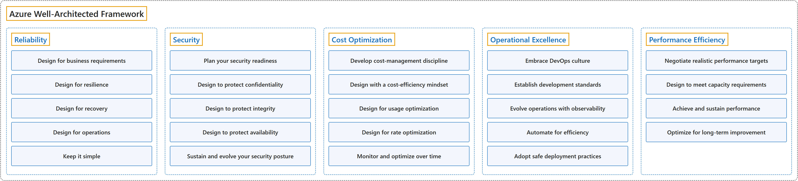

25. Azure Well-Architected Framework
Classification

Glossary
| Term | Definition | 中文翻译 | Source |
|---|---|---|---|
| Azure Well-Architected Framework Azure 架构良好的框架 |
"The Azure Well-Architected Framework is a set of quality-driven tenets, architectural decision points, and review tools intended to help solution architects build a technical foundation for their workloads." | Azure 架构良好的框架是一套以质量为导向的原则、架构决策点和评审工具，帮助解决方案架构师为工作负载打好技术基础。 | Microsoft, 2026, para. 1 |
| Reliability 可靠性 |
"Apply reliability guidance to your architecture to make your workload resilient to malfunction and to ensure that it returns to a fully functioning state after a failure occurs." | 在架构中应用可靠性指导，让工作负载能抵御故障，并确保它在故障发生后恢复到完全正常的状态。 | Microsoft, 2025d, para. 1 |
| Security 安全性 |
"Apply security guidance to your architecture to help ensure the confidentiality, integrity, and availability of your data and systems." | 在架构中应用安全指导，帮助确保数据和系统的机密性、完整性和可用性。 | Microsoft, 2025e, para. 1 |
| Cost Optimization 成本优化 |
"Apply cost optimization guidance in your architecture to sustain and improve your return on investment (ROI)." | 在架构中应用成本优化指导，以保持并提高投资回报率（ROI）。 | Microsoft, 2025a, para. 1 |
| Operational Excellence 卓越运营 |
"Apply operational excellence guidance to your workload to ensure workload quality through standardized processes and team cohesion." | 在工作负载中应用卓越运营指导，通过标准化流程和团队协作来确保工作负载质量。 | Microsoft, 2025b, para. 1 |
| Performance Efficiency 性能效率 |
"Apply performance efficiency guidance to your architecture to efficiently meet workload demands." | 在架构中应用性能效率指导，以高效地满足工作负载的需求。 | Microsoft, 2025c, para. 1 |
Coverage
| Certification | Skill area |
|---|---|
| AZ-305 Designing Microsoft Azure Infrastructure Solutions | Design business continuity solutions (15–20%) Design infrastructure solutions (30–35%) |
References
- Microsoft. (2025a). Cost Optimization quick links. Microsoft Azure Well-Architected Framework. https://learn.microsoft.com/en-us/azure/well-architected/cost-optimization/
- Microsoft. (2025b). Operational Excellence quick links. Microsoft Azure Well-Architected Framework. https://learn.microsoft.com/en-us/azure/well-architected/operational-excellence/
- Microsoft. (2025c). Performance Efficiency quick links. Microsoft Azure Well-Architected Framework. https://learn.microsoft.com/en-us/azure/well-architected/performance-efficiency/
- Microsoft. (2025d). Reliability quick links. Microsoft Azure Well-Architected Framework. https://learn.microsoft.com/en-us/azure/well-architected/reliability/
- Microsoft. (2025e). Security quick links. Microsoft Azure Well-Architected Framework. https://learn.microsoft.com/en-us/azure/well-architected/security/
- Microsoft. (2026). Azure Well-Architected Framework. Microsoft Learn. https://learn.microsoft.com/en-us/azure/well-architected/